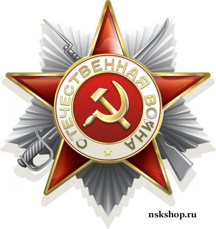
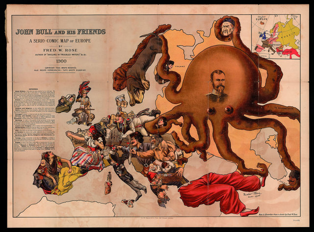

Warrax
Попытки пересмотра
|
«Нам показывают нас самих в кривом зеркале — и говорят: “Не правда ли, мерзкие рожи? Давайте вместе бороться с этими гадами!” Нам показывают нашу потерянную, почти забытую доблесть — и говорят: “Смотрите, вот оно — по-нашему EVIL, по-вашему — ЗЛО!” Ошибаетесь, господа. Мы с вами говорим на разных языках: ваше “добро” для нас — гибель, ваше “зло” — быть может, наше единственное спасение. Сейчас победа на вашей стороне; но конец фильма — еще не конец истории. Ждите сиквела. EVIL you name us — EVIL we are.» Н. Холмогорова |
Еще недавно День Победы как праздник не вызывал никаких вопросов. Великий праздник великой страны, отстоявшей свою независимость. Казалось бы, что здесь может вызывать сомнения — разве что детали событий у профессиональных военных историков?
Точно также сама Великая Отечественная война была трагической и героической страницей истории, со вполне устоявшимся концептом.
Однако с некоторого времени в России установилась политика практически откровенного геноцида по отношению к русским, стыдливо прикрытым «демократией» и «либерализмом».
Историю русского народа калечат целенаправленно и тщательно. Великих государственных деятелей представляют исключительно кровавыми деспотами (уместно вспомнить мои старые статьи об Иване Грозном и Петре Великом; общая тенденция: чем более правитель государственник, тем больше его хают), зато канонизируют «великомучеников», которые страдали сами — но не заставляли страдать врагов России.
Но до недавнего времени дезинформаторы не брались за Великую Отечественную, за Победу — просто потому, что было бесполезно. Слишком велик этот праздник, и тявканья мосек просто никто бы не заметил. Но время идет. Умирают ветераны, да и тех, кто застал войну в детстве, становится все меньше...
И сейчас мы все больше слышим и читаем оголтелой клеветы на тех, кто защищал Родину. В ход идет все, что угодно, по принципу «чему-нибудь да поверят», лишь бы не верили в то, что войну выиграл русский народ: мифы множатся в диапазоне от «войну начали выигрывать только после того, как вокруг Москвы облетела на самолете чудотворная икона» и до «кровавой гэбни», которая только и заставляла «русских рабов» воевать. Я даже как-то случайно увидел передачу по Первому каналу: «Директива предписывала летний состав, уличенный в саботаже, немедленно изъять из частей, свести в штрафные авиаэскадрильи и использовать на самых опасных направлениях». А за штрафными эскадрильями, видимо, летели заград-эскадрильи...
Зачем внедряют подобные мифы, зачастую вообще сказочные?
Все просто: да как эти русские смеют праздновать Победу? Это же воспитывает в них агрессивность и милитаризм! Поднимает боевой дух! – и так далее.
Понятно же, что нельзя в русских воспитывать боевой дух, и даже понимание того, что можно давать агрессивный отпор, должно быть табу! Русские должны работать и вымирать до оптимального количества рабов, и не более того.

Победа в Великой Отечественной Войне — это единственное историческое событие, которое сейчас хоть как-то объединяет русских в массе. И поэтому агитки вида «не за то сражались» играют явно против объединения русских. Воевали «белые братья» или нет, «по наущению жидов» или нет — это даже не вторично, а где-то вообще за горизонтом, для историков. Для народа все четко и понятно: воевали наши предки. И они разгромили тех, кто покушался на русские земли и пытался поработить русский народ.
Помните?
«Сегодня, в 4 часа утра, без предъявления каких-либо претензий к Советскому Союзу, без объявления войны, германские войска напали на нашу страну, атаковали наши границы во многих местах и подвергли бомбежке со своих самолетов наши города…» — так начиналось выступление В.М. Молотова 22 июня 1941 года.
И началась Великая Отечественная Война.
Сейчас точно так же, без заблаговременного объявления войны, идет война на новом, информационном поле. Речь идет о последовательном и целенаправленном принижении роли Победы СССР.
Я уже писал на тему мифов о войне статью «Победа — это не гешефт!» еще в 2006 году, но сейчас хотелось бы рассмотреть вопрос и со свежими данными, и с новыми аспектами. Хотя та статья актуальна и сейчас, и эту работу можно рассматривать как вторую часть.
Начнем с не столь давних событий.
Бардак Барака
Думаю, все знают, как Барак Обама во время предвыборных выступлений в штате Нью-Мексико заявил, что его родственник «был в передовых рядах американских солдат, вошедших в Освенцим и освободивших концентрационный лагерь».
Оппоненты-республиканцы напомнили тогда еще кандидату, что концентрационный лагерь в Освенциме был освобожден в ходе операции 322-ой стрелковой дивизии Красной Армии 27 января 1945 года.
Сенатор тут же извинился, быстренько подобрал другой лагерь, освобожденный американцами, и заявил, что перепутал Освенцим с Бухенвальдом. Проблема в том, что упомянутый дедушка Обамы служил в 89-й пехотной дивизии 3-й армии США, а Бухенвальд освободила 6-я танковая дивизия этой армии (благодарю за указание на факт В. Шурыгина).
Мелочь, казалось бы. Но показательная.
Показательно здесь то, как в США относятся к историческому периоду Второй Мировой: знать ничего особо не надо, важно именно примазаться.
Фидель Кастро писал о выступлении тогда уже президента США по случаю 65-й годовщины высадки союзнического десанта в Нормандии. Кастро заявил, что Барак Обама несправедливо преуменьшил роль Советской Армии в разгроме гитлеровской Германии. По словам Обамы, смелые действия сил союзников во время высадки в Нормандии изменили ход истории XX-го века и этот день не может быть забыт историей.
«Обама, выступивший на церемонии 65-летия высадки в Нормандии — благодаря которой, как следует из его слов, была освобождена Европа, — посвятил роли СССР всего 15 слов, или 1,2 слова на каждые два миллиона советских граждан, погибших в той войне. Это несправедливо», — писал лидер кубинской революции.
Обама произносил гневные речи против гитлеризма:
«То, с чем мы столкнулись в виде нацистского тоталитаризма, было не просто битвой соперничающих интересов, а было борьбой с иным пониманием человечности.»; «Нацистская идеология была направлена на порабощение, унижение, уничтожение, она осуществляла убийства в массовых масштабах…»
А вот дальше, после описания картины важности победы над гитлеровской Германии, он перешел к победителям. И заявил, что история второй мировой войны явила собой историю победы союзников. «Это легендарная история американской 82-й дивизии и история британцев, чья смелость вынудила Гитлера отменить высадку в Англии; это история канадцев, которые пришли сюда (в Нормандию), несмотря на то, что они не подвергались нападению, это история русских, которые вынесли самые тяжелые жертвы на Восточном фронте, и всех тех французов, кто предпочитал умирать в сопротивлении тирании, нежели жить под ее игом».
Как вам нравится такая трактовка истории?
Русские, мол, понесли самые тяжелые жертвы, но легендарны не они, а какая-то 82-я американская дивизия. Даже французов упомянул, что показательно. Вот что по их поводу пишет А. Тейлор, известный английский историк, автор фундаментального труда «Вторая мировая война»: «Для подавляющего большинства французского народа война закончилась…. правительство Петена осуществляло политику лояльного сотрудничества с немцами, позволяя себе лишь слабые, бесплодные протесты по поводу чрезмерных налогов… Единственное омрачало согласие: Шарль де Голль бежал в последний момент из Бордо в Лондон… Он обратился к французскому народу с призывом продолжать борьбу… Лишь несколько сот французов откликнулись на его призыв».
Повторю: несколько сот. Вот и все те французы, кто предпочел умирать в сопротивлении тирании, нежели жить под ее игом.
Упомянуты же наравне с русскими.
Согласитесь, что такое странное нивелирование заслуг не может быть случайным.
Значение Победы: крах Запада
В. Кожинов некогда очень верно написал:
«Есть все основания полагать, что западный миф о русской опасности сложился в результате целого ряда безуспешных походов Запада в Россию. В течение столетий страны Запада без особо напряженной борьбы покоряли Африку, Америку, Австралию и преобладающую часть Азии (южнее границ России), то есть все континенты. Что же касается Евразии-России, мощные походы Польши и Швеции в начале XVII в., Франции в начале XIX в. и т.д. терпели полный крах, — хотя Запад был убежден в превосходстве своей цивилизации. И это порождало в Европе русофобию – своего рода иррациональный страх перед таинственной страной, которая не обладает великими преимуществами западной цивилизации, но в то же время не позволяет себя подчинить.»
Понятно, что отдавать Победу во Второй Мировой, столь значимую, каким-то там русским Западу не хочется.
Но дело не только в славе. Давайте разберем тему подробнее (выражаю благодарность В.Смирнову за высказанные мысли, часть из которых я использую далее).
Речь идет не просто о банальной победе СССР над Германией.
Суть — в победе над нацизмом, олицетворявшем «поход на Восток», мечту всей Европы.
Смысл — в наглядной демонстрации превосходства социалистической системы.
Но главное — понимать (я об этом писал ранее в работе «Великая Война. Уроки прошлого.»), что Советский Союз сражался не против одной Германии. Война шла со всей Европой, со всеми объединенными ее силами. Не только формальные союзники, но и т.н. «порабощенные» Гитлером страны вполне поддержали исторический «натиск на восток». Вообще, если внимательно рассмотреть так называемое «порабощение» Гитлером континентальной Европы, образуется стойкое впечатление, что «девушка сама хотела». Пожалуй, только в Югославии немцы столкнулись с реальным, серьезным сопротивлением.
Как верно подметил Кожинов, Запад так или иначе победил и завоевал почти весь мир, что в европейской ментальности объясняется фундаментальным превосходством западной цивилизации и одновременно доказывает это самое превосходство. И только Россия, со своей очевидно чуждой западу цивилизацией (а чуждый по западному мнению — значит, низший) не была побеждена. Наличие России ломает весь мировоззренческий комфорт запада, постоянно раздражает и требует объяснении. Известная западная русофобия коренится именно в этом метафизическом вызове, а вовсе не в реальной опасности захвата Европы Россией.
Вот для иллюстрации карикатура 1900-го года, изображающая Россию в виде спрута.

Историкам же прекрасно известно, что в это время России хватало и своих внутренних проблем. И в Первую мировую затем Россию также втянули по слабоволию Николая II.
Возникает логичный вопрос: если Россия уже тысячу лет успешно отбивает натиск Запада, то чем же так особенна Победа в 1945 году?
Дело в том, что Запад по необходимости развил в себе навык объяснять все победы России как-то так заковыристо, что это как бы и не победы вовсе, а цепь случайностей. Все бы хорошо, но какой-нибудь «генерал Мороз» все планы нарушит, причем совершенно неожиданно — кто бы мог подумать, что в России бывает холодная зима? Более того, мороз, по-видимому, действует избирательно только на граждан Европы, а русских не затрагивает. Ну и так далее.
Но Победа в Великой Отечественной войне ну никак не объясняется случайностями — она есть результат слишком громадного, слишком великого противостояния. Слишком долго и упорно шла битва, слишком велики жертвы, и слишком чужда Западу Россия эпохи Сталина, чтобы возможно было объяснить русскую Победу очередными заковыристыми «загогулинами». Попытки, конечно, были, но очень уж неубедительные.
А, главное, Запад потерпел поражение в эпоху, когда стало очевидным, что борьбу ведут не гениальные полководцы и даже не правительства, а народы и цивилизации.
Не зря вполне обосновано пишут, что непосредственным результатом Победы стал крах колониальной системы, просуществовавшей почти 400 лет. Запад на время потерял присущую ему самоуверенность, свое самомнение, свою комфортность. Запад усомнился в собственных основаниях.
Европа породила нацистскую Германию, отдалась ей, была в ее лице повергнута начисто. Русскими.
Запад очень хочет, чтобы этого не помнили ни европейцы, ни русские.
Значение Победы: банкиры
Прим.: используются материалы Emdrone.
Общеизвестно, но никогда не формулируется официально, ход истории с точки зрения банковских структур. История уделяет внимание королям, герцогами и проч. аристократам, но старательно обходит вопрос финансирования их деятельности. Конечно, отдельные упоминания встречаются, но они целенаправленно никогда не сводятся в систему.
Исторически сначала сложилась власть племенных аристократий: вожди племен постепенно стали баронами, графами, герцогами, королями…
Однако начиная со средних веков (по мере развития средств производства) самым и богатыми были уже не феодалы, а новое сословие — ростовщики и торговцы.
С одной стороны, именно они давали деньги королям и более мелким «благородным», а с другой — ненавидели их за то, что власть передавалась исключительно по наследству, и они, несмотря на свое фактическое могущество, не могли стать аристократами. Варианты брака с бедной аристократкой или просто покупка титула — более поздние, а изначально был именно такой когнитивный диссонанс.
Все главные революции в Европе тех времен были проплачены банкирами. Кромвель рубил голову английскому королю (1649 год) на деньги амстердамских торговцев (сохранилась переписка Кромвеля на эту тему). Сразу после этого был создан центральный банк и разрешен въезд в Англию евреям.
Великая Французская революция была проведена масонами, которых оплачивали банкиры. Когда ситация вышла из-под контроля, банкиры подхватили тогда малоизвестного молодого офицера Наполеона. Придя к власти, он дал возможность создать центральный банк и организовал поход.
США изначально были страной без аристократии вообще. Примерно пятьдесят лет после освобождения от власти англичан президенты США боролись против создания центрального банка — и проиграли. Линкольн провел нужную войну за централизацию власти (вопрос рабства был лишь предлогом), и появилась первая федеральная валюта.
А в 1913 году банкиры наконец создали Центральный Банк (Федерального Резерва). Все в курсе, что это частный банк, а не государственный? Единственным президентом, который рискнул выпустить государственные деньги, был Кеннеди. Он был застрелен в том же году, когда подписал соответствующий указ, а банкноты постепенно были изъяты из обращения. Хотя указ юридически правомочен до сих пор, ни один президент уже не рисковал его претворить в жизнь.
Таким образом, Запад de facto — это цивилизация, организованная вокруг власти банкиров, которые, производя деньги из воздуха, через этот неограниченный ресурс скупают все: газеты, промышленность, политиков, юристов…
До конца XIX века Россия была вне сферы западного банкирства, и только благодаря графу Витте банки стали получать серьезные «входы» в экономику страны.
Уничтожение империй в Первую Мировую тут же сменилось попыткой поставить свой (проплаченный банкирами — тут заслуживает внимание версия не «Ленин — немецкий шпион в пломбированном вагоне», а влияние английских спецслужб) режим коммунистов-интернационалистов, которые должны были подчиняться Интернационалу и захватывать остальные части Европы — обломки империй, которые превратились в мелкие национальные государства.
И все так хорошо — для Запада — начиналось, но сначала Ленин умудрился сохранить Россию в относительной целости (Польша и Финляндия все равно были как бы отдельно), более того — страна начала постепенно усиливаться. Причем все завоевания банкиров, осуществленные в царской России, большевики перечеркнули на корню.
А потом началась эпоха Сталина, и социализм в России постепенно начал перерастать в сильную государственную власть огромной страны с гигантскими ресурсами. Русская цивилизация начала выигрывать у Запада.
Неверно рассуждать об истории второй половины ХХ века лишь в плане государств, надо смотреть и на общие изменения, которые сейчас привели к глобализации.
Россия для Запада — это враждебная цивилизация, которая самим своим существованием доказывает, что можно жить не так.
И поэтому Победу надо если не отобрать, то хотя бы оттяпать по кусочку, поделить. Мол, без Запада не смогли бы, русский социализм не самодостаточен.
Празднование: 8 или 9?
Действия, направленные на перетягивание Победы на себя,
начались еще собственно до Победы.
Думаю, все в курсе, что в европейских странах день окончания Второй Мировой
войны, то есть фактически День Победы, отмечается не 9-го мая, а 8-го?
Дело в том, что союзнички предприняли попытку подписать акт капитуляции Германии без участия Советского Союза. 7 мая 1945 года в городе Реймс представители вооруженных сил США и Великобритании, американский генерал Омар Брэдли и английский фельдмаршал Бернард Монтгомери, подписали с германским командованием соглашение о безоговорочной капитуляции Германии. От СССР капитуляцию подписал представитель советского верховного командования в ставке генерала Эйзенхауэра генерал-майор Иван Суслопаров.
Однако у генерала Суслопарова не было разрешения из Москвы о капитуляции Германии — он не успел получить указаний, так как союзники торопили подписание документа. Суслопаров тогда оказался в трудном положении. В самом деле: если не подписывать, то получалось, что СССР остается единственным продолжающим войну с Германией государством антигитлеровского союза. Генерал проявил вполне разумную инициативу. Он поставил свою подпись под документом, но с примечанием, что он «не исключает в дальнейшем подписания иного, более совершенного акта о капитуляции Германии, если о том заявит какое-либо союзное правительство».
Так оно и получилось: после того, как Кремль настоял, чтобы капитуляция Германии была принята в Берлине верховным командованием всех стран антигитлеровской коалиции, документ, ознаменовавший полный военный разгром гитлеровской империи, подписали в ее столице 8 мая в 22:43 по центральноевропейскому времени (9 мая в 0:43 по московскому времени) 1945 года представители СССР (Маршал Советского Союза Жуков), США (генерал Спаатс), Великобритании (маршал авиации Таддер) и Франции (генерал де Латр де Тассиньи).
От Германии Акт о безоговорочной капитуляции Германии подписал генерал-фельдмаршал Вильгельм Кейтель, а также представитель люфтваффе генерал-полковник Штумпф и Кригсмарине адмирал фон Фридебург, имевшие соответствующие полномочия от Деница.
Казалось бы — ничего «такого», поторопились, и тут же исправили ситуацию, подписав документ на следующий день более высокопоставленным составом.
Но показательно то, что в западной историографии подписание капитуляции германских вооруженных сил, как правило, связывается именно с процедурой в Реймсе, а подписание акта о капитуляции в Берлине именуется его «ратификацией».
И празднуется именно 8-е, а не 9-е.
Подписали-то как мы хотели, а русские лишь ратифицировали — улавливаете нюанс?
Подмена смысла
Результатом и сутью Великой Отечественной войны, или же Второй Мировой, является именно победа Советского Союза.
Казалось бы, вариантов нет.
Однако один вариант давно и последовательно пытаются протолкнуть как альтернативу. Я имею в виду так называемый холокост.
Речь идет не о трагедии еврейского народа непосредственно — геноцид евреев в гитлеровской Германии очевиден. Но концепт холокоста подразумевает именно то, что у всех других народов (у кого был) обычный геноцид, и только у евреев — отдельный, особенный холокост.
И преподносится он именно как главная трагедия войны, причем с таким пылом, что все остальное кажется сущей мелочью. Подумаешь, пара десятков миллионов русских.
Так вот — концепт холокоста предлагает совершенно иной смысл великой войны. Он замещает в европейском сознании Победу. Как только холокост становится метафизическим центром события, наша Победа представляется всего лишь эпизодом, и на таком же второстепенном уровне уже легко поднимать вопросы о политическом режиме в СССР (хорош он или плох), о якобы изнасилованных немках, а важности поставок американской тушенки и т.д. Все — мелочь по сравнению с холокостом.
Таким образом, концепт холокоста — это фундаментальный, экзистенциальный враг нашей Победы. По своим последствиям он является отрицанием сакральности нашей Победы в Великой Отечественной войне (Второй Мировой для Запада).
Празднование в РФ
Но не только Запад стремится принизить значение Победы, к сожалению, внутри РФ сейчас также ведутся аналогичные действия.
Я не буду сейчас вспоминать ветеранов, которых не пускают на праздник в Москве, ставя ограждения и т.д.
Поговорим о выхолащивании духа Победы даже во время официального празднования (используются материалы Bigmishich, «Как у русских отняли День Победы?»).
Великий праздник, объединявший весь народ в одно целое к нынешнему 2009 году окончательно свели до уровня банальных протокольных, а потому бездушных и бессмысленных мероприятий.
Как известно, победа в Великой Отечественной войне — это одна из «точек сборки» нации, на которую накладывалась определенная система ценностей — мужество, героизм, патриотизм, бескорыстие, преданность Родине, честность, отвага. Эти ценности были выстраданы жизнью и кровью отцов и дедов, и именно поэтому они не только сплачивали общество, но и служили непременной основой для преемственности поколений.
Что же мы видим сейчас? Российской политической квазиэлите, ориентированной на Запад и исповедующей «общечеловеческую систему ценностей», удалось полностью подменить не только смысл праздника, но и суть самой Великой Отечественной войны.
Эта подмена очень логична в свете проводимой последние 20 лет политики геноцида русского народа, выражающейся не только в создании условий для его вымирания, но и в систематическом промывании исторической памяти.
Первое. Из уст высшего руководства страны, ее политических глоссаторов и политической обслуги, в том числе с телевизионного экрана, мы постоянно слышим, что, оказывается, СССР в 1941-1945 годах воевал с неким фашизмом. Что такое фашизм, нам напрямую не говорят, но в другое эфирное время намекают, что фашизм — это когда убивают таджикскую девочку™, когда говорят «Россия для русских!» или «Слава России!», это когда плохо относятся к трудолюбивым мигрантам™ и произносят слово «понаехали». И потом многозначительно и пафосно добавляют: «Против всего этого воевали наши деды».
Такая постановка вопроса очень удобна для решения сиюминутных политических задач, когда определенная часть населения осведомлена об истинных целях политической квазиэлиты и активно ей противостоит.
Однако подобные методы убивают и «второго зайца», действуя в долгосрочной перспективе. Когда утверждают, что Советский Союз воевал с «фашизмом», от нас укрывают самое главное — с каким, собственно, врагом мы воевали. «Фашизм» не имеет лица. Но почему боятся произносить, что СССР противостоял немецко-фашистским захватчикам? Ведь это определение является и по смыслу, и по содержанию самым точным! Против нас шла военная машина, состоящая из немцев и итальянских фашистов, к которым, правда, присоединилась вся «цивилизованная Европа». По отношению к России они были именно захватчиками.
Думается, что избегают таких «уточнений» вполне преднамеренно, преследуя лишить, в том числе молодое поколение граждан страны, понимания геополитического места России в окружающем мире, знания об ее исторических врагах и вообще знания собственной истории. В такую идеологическую кашу потом ведь можно насовать что угодно — вплоть до того, что СССР был агрессором, которому противостоял «цивилизованный Запад». Спросите любого школьника из Восточной Европы, да и Западной тоже — он вам именно это и скажет.
Подобные историко-идеологические эксперименты делаются нашей квазиэлитой в целях более комфортного ее «инкорпорирования» в состав мировой политической и экономической элиты — чтобы внутри страны не было никакого ей противодействия. Газ и нефть ведь удобнее продавать, когда имеется лояльность и извне, и изнутри. А извне иногда пальчком грозят — мол, у вас тут не порядок, у вас тут шовинизм, антисемитизм, антиамериканизм и в целом нелюбовь к Западу. Разберитесь.
Второе. Вместо реального и всенародного праздника нам в течение трех лет подсовывают фетиш в виде «георгиевской ленточки». Весь Интернет кишит возмущениями, что этот «символ Победы» иные особо активные «россияне» прицепляют то к трусам, то к ботинкам, то еще к чему. Не касаясь моральной стороны вопроса, что георгиевскую ленточку имеют право носить только ветераны, имеющее соответствующие ордена (о ветеранах уже вообще думать позабыли), нужно отметить, что в РФ идет повсеместное осквернение этого символа. Оскверняется, таким образом, и сам День Победы. Но кому до этого дело? Кому дело до истории и до моральных принципов? Недалек тот день, когда на вопрос «Что такое День Победы?» школьники нам будут отвечать «Это когда ленточку прицепляют». Праздник превратили в обычную демонстрацию фетиша, точно такого же, каким являются сегодня блины на Масленицу и куличи на Пасху.
Третье. Несколько пытался посмотреть творения современных российских киношников (не кинематографистов, а именно киношников) на тему Великой Отечественной войны — фильмы типа «Сволочей» или «Штрафбата». После нескольких минут рвотный инстинкт почему-то всегда брал верх и прерывал просмотр. Общее впечатление от этих «творений»: вместо реально имевшего места во время войны героизма и самопожертвования русских солдат внимание почему-то акцентируется на заградотрядах, зверствах НКВД, интернационализме в плохом понимании этого слова и «горах трупов», которыми заваливало немцев советское командование. Показывается почему-то не Священная война, а именно какая-то бойня, в которой поведение главных действующих лиц является копией с американских боевиков класса В максимум.
Посмотрите для сравнения фильмы советских времен — ну, хотя бы «Освобождение», что ли… Или «Они сражались за Родину».
Почему так смещены акценты? Почему вместо почвы для раздумий и душевного подъема у зрителя после просмотра таких «продуктов» из впечатлений остаются только горы трупов? Ответ прост. Когда примером войны нужно сплотить нацию, показывают героизм, показывают одухотворенных бойцов (пусть это будет выглядеть и не совсем правдиво), создают собирающий нацию миф — в хорошем смысле этого слова. Когда ставятся противоположные задачи, агитпроп заказывает трупы и чернуху.
Четвертое. Российский агитпроп все последние годы вел активную работу по дискредитации Победы, используя еще одну изощренную схему. Каждая говорящая голова из телеэкрана, словно какой-нибудь колхозный бухгалтер, так и норовит высказать «умнейшую мысль» о цене Победы. Да, говорит, мы победили, но какой ценой… И дальше следует гамлетовская пауза, после которой нам рассказывают про кровопийцу Сталина, сталинские репрессии™, миллионы жертв войны, бестолковое военное руководство и т.д. Я сам по ТВ ы позапрошлом, если не путаю, году слышал про «штрафные экскадрильи» — видимо, с заградэскадрильями позади.
У обывателя после таких эскапад остается тяжелый осадок: так победили мы или как? Этого осадка и добиваются с голубого экрана. Зачем это надо? Запомните: педалирование служками агитпропа «цены Победы», выпячивание фактов о миллионах убитых делается для того, чтобы замаскировать результаты деятельности их хозяев за годы реформ, когда русские потеряли уже сравнимое количествво человек.
Схема универсальна. Ведь нам не только о цене Победы имеют честь докладывать, но, например, и о цене индустриализации 1930-х годов. Или кривятся — да кому нужны эти ракеты и атомные бомбы, если нет Двухсот Сортов Колбасы?
Вывод из всего перечисленного очевиден: праздник 9 мая, как, собственно и все вокруг, на сегодняшний день узурпирован россиянской квазиэлитой. Она его использует не для воспитания патриотизма и лучших душевных качеств у подведомственного ей народа, а, строго в противоположных целях.
Страх перед Сталиным
Забавное и показательное событие произошло недавно в Воронеже.
По инициативе обкома КПРФ 22 июня появились десять рекламных щитов, на которых изображен Генералиссимус И.В. Сталин и слова «Победа будет за нами».
Коммунисты объяснили, что преследовали две цели. Во-первых, посвятили свою акцию 130-летию «вождя всех времен и народов», а, во-вторых, подготовились к 22 июня — дню начала войны, в которой Сталин сыграл очень большую роль.
Местные чиновники всполошились. Начальник отдела рекламы управления главного архитектора города Сергей Бобровников заявил:
«В соответствии с законодательством рекламная конструкция должна использоваться исключительно для рекламы, в том числе для социальной. Для прочей информации подобная конструкция не может использоваться. В этом я вижу факт нарушения».
Казалось бы — вполне уместная, к дате, социальная реклама, позитивная и правильная.
Но было заявлено, что изображение Сталина на плакатах не является рекламой, не направлено на благотворительные или общественно полезные цели, а также не обеспечивает интересов государства. В связи с этим, согласно Закону о рекламе, Сталина с щитов следует убрать. И рекламным агентствам тонко намекнули, что могут и лицензию отозвать, если не понятно.
Скажите на милость, каким образом призыв к победе страны «не обеспечивает интересов государства»?
Некоторые чиновники даже начали впадать в тихую панику. Так, директор Социологического центра Российской академии госслужбы (РАГС) Владимир Бойков заявил:
«В последнее время наблюдается рост доверия к таким персонам, как Ленин и Сталин. Согласно данным соцопросов, в кризисное время у людей все чаще возникает ощущение развала страны, а при этих лидерах была вроде как великая держава».
Обратите внимание: ВРОДЕ КАК великая держава. У меня даже слов нет прокомментировать, одни междометия.
В итоге ночью 25 июня с плакаты с изображением Сталина были сняты.
Примечательно, что воронежская акция со Сталиным прогремела не только на всю Россию. За комментариями по поводу эпатажных плакатов на улицах Воронежа к Сергею Рудакову помимо федеральных СМИ обратились и зарубежные корреспонденты с британских «Би-би-си», «Таймс», «Рейтер» и представители французской прессы.
Забеспокоились.
На Западе пишут
Просто небольшая подборка материалов, которые не пришлось долго искать.
«Die Presse», Австрия, 17 марта 2005:
«Но непонятно, когда Россия рекламирует своего рода монополию на победу во Второй мировой войне. (Разве Белоруссия, Украина и Польша понесли в этой войне сравнительно меньшие потери?) Непонятно, почему Москва не хочет ничего слышать о том, что она не может умывать руки, считая себя невиновной в том, что Советский Союз заключил перед началом Второй мировой войны в 1939 году пакт с Третьим рейхом Гитлера, по которому оба тирана поделили между собой Восточную и Центральную Европу.
Непонятно, когда сегодняшняя Россия не желает признавать за своими соседями их совершенно особый опыт, связанный с победой Красной Армии, так как для них она означала новую эру десятилетий гнета — гнета со стороны советского режима.»
«Daily Mail», Великобритания, 20 октября 2004:
«Макс Гастингс — один из самых выдающихся военных историков Британии. В своей новой книге “Армагеддон” он на основе многолетних исследований и свидетельств сотен очевидцев — военных и мирных жителей — ярко и по-новому описывает события последних месяцев второй мировой войны. Сегодня, в третьем из публикуемых нами отрывков из книги, он раскрывает неизвестные страницы беспощадного наступления советских войск через восточные районы Третьего Рейха.
Выдержки из книги Макса Гастингса “Armageddon: The Battle For Germany 1944-1945”,
“Первое вторжение русских в восточные районы Германии произошло в октябре 1944 г., когда части Красной Армии захватили несколько приграничных деревень. Через пять дней они были выбиты оттуда, и перед глазами гитлеровских солдат предстала неописуемая картина.
Едва ли хоть один гражданский избежал смерти от рук русских солдат. Женщин распинали на дверях сараев и перевернутых телегах, или, изнасиловав, давили гусеницами танков. Их детей тоже зверски убили. Сорок французских военнопленных, работавших на окрестных хуторах, предполагаемые освободители расстреляли. Та же судьба постигла и признанных немецких коммунистов. Действия красноармейцев не были проявлением бессмысленной жестокости — это был методичный садизм, не уступающий действиям самих нацистов.”»
«Frankfurter Allgemeine Zeitung», Германия, 18 марта 2005:
«9 мая является единственным по-настоящему национальным праздником России. Ни в чем другом россияне так не единодушны, как в том, что касается памяти об ужасах немецкой оккупации во время Второй мировой войны и победы над национал-социалистами. Поэтому в России все, начиная с простого гражданина и кончая известными политиками, возмущены тем, что президенты Эстонии и Литвы отказались от приглашения российского президента Путина принять участие в торжествах в Москве, посвященных шестидесятой годовщине окончания войны.
Однако этот отказ Кремль должен записать на свой счет. Официальная Россия не только лжет, говоря, что никакой советской оккупации прибалтийских государств не было, как не было и преступлений в отношении их гражданского населения, но и отвечает безобразной руганью, когда политики из этих стран напоминают об этом.
Россия ничего не потеряет, если признает, что Сталин после 1945 года распространил террор из Москвы на большую часть Европы. Но для Кремля речь идет не о том, чтобы почтить память жертв, в том числе российских жертв немецкого насилия, а о том, чтобы предстать в роли триумфатора.»
Обнаглели эти русские — праздновать свою Победу!
Наша Победа небезопасна
Свежее: Парламентская ассамблея Организации по Безопасности и Сотрудничеству в Европе 3 июля приняла резолюцию «Воссоединение разделенной Европы», уравнивающую сталинизм и нацизм и призывающую к международному осуждению тоталитарных режимов. Парламентская ассамблея ОБСЕ в пятницу, , приняла резолюцию, уравнивающую В той же резолюции день 23 августа, дату подписания пакта Молотова-Риббентропа, предложено сделать днем памяти жертв сталинизма и нацизма.
Резолюция, одна из восемнадцати в составе одобренной парламентариями «Вильнюсской декларации», прошла вопреки протестам со стороны России, которая обвинила авторов документа в фальсификации истории: очевидно, что сознательно принижает роль советского народа в победе над гитлеровской Германией.
Напоминаю, что 19 мая в России указом президента Дмитрия Медведева была создана комиссия по борьбе с фальсификацией истории. Правда, члены этой комиссии, скажем так, не совсем подходят для такой работы — я подозреваю здесь сознательный саботаж идеи, но европейцы все равно зашевелились — как так, русские не собираются «платить и каяться»?!
Цитирую:
«Резолюция
Воссоединение разделенной Европы:
Поощрение прав человека и гражданских свобод
В регионе ОБСЕ в XXI веке…
3. отмечая, что в двадцатом веке европейские страны испытали на себе два мощных тоталитарных режима, нацистский и сталинский, которые несли с собой геноцид, нарушения прав и свобод человека, военные преступления и преступления против человечества…
4. признавая уникальность Холокоста…
10. напоминая об инициативе Европейского парламента объявить 23 августа, т.е. день подписания 70 лет назад пакта “Риббентроп-Молотов”, общеевропейским днем памяти жертв сталинизма и нацизма во имя сохранения памяти о жертвах массовых депортаций и казней…
13с) поощрять и поддерживать деятельность НПО, проводящих исследовательскую и просветительскую работу о преступлениях тоталитарных режимов…
17. выражает глубокую обеспокоенность по поводу восхваления тоталитарных режимов, включая проведение публичных демонстраций в ознаменование нацистского или сталинистского прошлого…»
Особенно показателен пункт 17 — по сути это призыв прекратить праздновать День Победы. Не менее показательная поддержка так называемых НеПравительствиенных Организаций — это вовсе не «любая организация, не являющаяся правительственной», а вполне определенный класс организаций-агентов влияния Запада. Думаю, деятельность Фонда Сороса подробно расписывать не надо? Кто не в курсе — посмотрите в интернете. Сюда же относятся так называемые «правозащитник», всегда выступающие против русских, сторонники «метадоновой заместительной терапии» (котрая неизбежно увеличит количество наркоманов) и т.д.
Понятно, что речь идёт именно о России, а не о других государствах — по сути, прямое подстрекательство к очередному «переписыванию» и фальсификации истории СССР. Особо наглядно намерения иллюстрирует то, что эта резолюция ОБСЕ принята с подачи неонацистов Прибалтики и Словении, которые свободно живут в Европе. Инициатива принадлежит представителю Латвии Инесе Вайдере, депутату от Эстонии Марианне Микко, а также британцу Кристоферу Бизли, венгерке Зите Гурмай и немцу Александру Альваро (типично немецкая фамилия, однако).
Западная Европа, так гневно «осуждающая» нацизм, вводящая уголовное преследование за сомнение (даже не отрицание!) холокоста, в упор не видит демонстративных маршей литовских, эстонских и латышских эсэсовцев — гитлеровских карателей в столицах государств Прибалтики. Я уж не говорю про откровенно шовинистическую (можно смело сказать — нацистскую) практику существования русских «неграждан», лишенных многих политических и других прав. Но когда страна, которая у себя чествует «ветеранов СС», требует запретить демонстрации в честь нацизма И сталинизма, — это уже ни в какие рамки.
«Спецназ» уже касался этой темы (Н. Холмогорова, «Гитлер умер, а мы — еще нет», декабрь 2004):
«Иррациональный страх перед сильной и влиятельной Россией — вот движущий мотив прибалтийских радикальных политиков, толкающий их на самые экстравагантные и порой откровенно скандальные выходки. Им нечего опасаться: пока их действия направлены против России, "цивилизованный мир" будет закрывать глаза и на громкие заявления, и на смешные по своей несоразмерной притязательности требования, и даже на откровенные заигрывания с официальным общеевропейским пугалом — нацизмом. Точно так же, как принято в том же Европарламенте закрывать глаза на откровенно бандитскую и террористическую сущность других "пострадавших от русского империализма" — чеченских "повстанцев"…
И не так уж сложно догадаться, почему именно день Победы вызывает столь неприязненную реакцию у прибалтийских "борцов с тоталитаризмом" и их европейских покровителей, почему они так стараются скомпрометировать этот священный для каждого из нас праздник. Народ жив, пока жива его память; кто чтит свои прошлые победы, тот способен побеждать и в настоящем. Вот почему первоочередная задача — навязать нам чувство вины за былые подвиги, превратить наши победы в поражения.»
Резолюция постулирует «уникальность Холокоста», при этом тщательно забывая, что именно «сталинский тоталитаризм» спас евреев от поголовного истребления гитлеровцами, заплатив за это миллионами жизней советских людей на фронтах Второй мировой войны и в тылу. Западная Европа также запамятовала и о том, что именно Англия, Франция и США взрастили нацистского зверя, направив его на Восток, сорвали создание европейской системы коллективного отпора Гитлеру (об этом «Спецназ» недавно писал все в тех же «Уроках…»). Именно сталинский Советский Союз был создателем Антигитлеровской коалиции.
Последовательность позиции
Обсуждаемое — отнюдь не единичный факт, а последовательная позиция Запада.
Про инициативы прибалтов можете прочесть в упомянутой статье Н. Холмогоровой на сайте «Спецназа». Напомню также, что в начале 2006 г. Парламентская Ассамблея Совета Европы (ПАСЕ) приняла резолюцию №1481 «О необходимости осуждения международным сообществом преступлений тоталитарных коммунистических режимов».
ОБСЕ, ПАСЕ и прочие аналогичные международные европейские организации превратились сегодня в инструмент политического давления на Россию в интересах Запада, требуя «платить и каяться». Или хотя бы только второе — первое подождет.
Что совсем уж абсурдно — РФ не только состоит членом этих организаций, но и финансирует их.
Против резолюции от 3 июля выступил только представитель РФ (что понятно) и Греции. Остальные были, так сказать, не против.
Особенно показательна позиция представителя Франции, который отождествил ее с «охотой на ведьм», при этом проголосовав «за». Помните инквизиторский подход? Если ведьма, брошенная в воду, потонет сама — то она невиновна, а если не тонет — то ее надо пытать и сжечь. Аналогичный подход, похоже, Европа стремится применить и к России — либо эти русские сдохнут сами, либо придется им помочь.
Для начала — обрубим исторические корни, а там уже легко и привить стыд за сталинские времена, заставить платить за какие-нибудь «преступления против человечности» и проч. Если кто не в курсе, поинтересуйтесь, как сейчас обстоит дело в Германии на тему национальной идентичности, и сколько выплатила Германия Израилю. Причем именно что не только лично пострадавшим от нацизма — сидевшим в концлагерях и проч., — а еврейским организациям.
Аналогичную судьбу хотели бы навязать и России — недаром изредка то Прибалтика вякнет про «советскую оккупацию», то еще кто…
Латвия, кстати говоря, уже объявила 23 августа «днем памяти жертв сталинизма и нацизма».
И совсем уж показательное: президент Украины В. Ющенко поручил генеральному прокурору Украины А. Медведько и главе СБУ В. Наливайченко рассмотреть вопрос о возбуждении уголовного дела против руководства СССР (включая Иосифа Виссарионовича Сталина) по факту «незаконных выселений в 1944 году крымскотатарского народа и других народов, проживавших на территории Крыма».
Таким образом, предпринимаются попытки навязать стране-победительнице имидж чуть ли не правопреемницы нацистского режима, которая, в отличие от немцев, которые уже более полувека интенсивно платят и каются, этого не делает.
Показательно (как часто я употребляю это слово с статье!), что нацизм осудили сразу после войны. А про сталинизм молчали даже после смерти Сталина — и вдруг вспомнили. С чего бы это?

Резолюция ОБСЕ отражает животный страх перед возрождением России и восприятие указа Президента о комиссии по недопущению фальсификации истории как знака если не возрождения, то сдерживания воздействия Запада.
До народа, а, главное, — до власти должно дойти, что очернение Сталина — это очернение России. Невозможно одновременно облыжно обвинять Сталина и сохранять Победу. Россия стоит сегодня перед ясным выбором: либо признать величие Сталина и Победу, либо отказаться от Победы вовсе.
Послесловие
Как видите — картина складывается однозначная.
Западу нужно, чтобы русские забыли, что это такое — сражаться за Родину.
И — что такое побеждать.
Для того, чтобы извести русский народ под корень, ведется атака по всем фронтам, включая информационный.
Все, что относится к воинским подвигам — должно возводиться в культ. Русские всегда уничтожали своих врагов, должны уничтожать и будут уничтожать. Именно поэтому пытаются оторвать русских от своих корней и забыть традиции — от прибивания щитов на ворота и до установки красного флага на Рейхстаг.
И так будет всегда.
Мы — не Запад и не Европа. Мы — не Восток и не Азия.
Мы — Русь.
И возрождение России начнется с открытия памятника Иосифу Виссарионовичу.